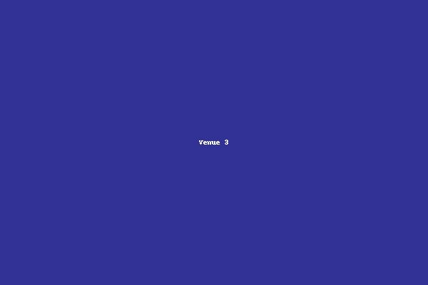

### venue3.html ###

<!DOCTYPE html>
<html lang="en">
<head>
    <meta charset="UTF-8">
    <meta name="viewport" content="width=device-width, initial-scale=1.0">
    <title>場所 3 - Jazz To Night</title>
    <link rel="stylesheet" href="../css/styles.css">
</head>
<body>
    <header>
        <div class="navbar">
            <h1>Jazz To Night</h1>
            <nav>
                <a href="../index.html">今晚的演出</a>
                <a href="../venues.html">展演場所</a>
                <a href="../musicians.html">樂手</a>
                <a href="../articles.html">文章</a>
            </nav>
        </div>
    </header>
    <main>
        <section class="venue-detail">
            
            <h2>場所 3</h2>
            <p>地址：台北市信義區</p>
            <p>介紹：這個場所提供多樣化的演出和活動，吸引了眾多爵士樂迷。</p>
            <h3>未來演出安排</h3>
            <ul>
                <li>2023/11/03 - 演出 G</li>
                <li>2023/11/07 - 演出 H</li>
                <li>2023/11/12 - 演出 I</li>

            </ul>
            <h3>設備設施</h3>
            <p>專業音響設備、舒適的座位、先進的燈光系統。</p>
        </section>
    </main>
    <script src="../js/main.js"></script>
</body>
</html>
